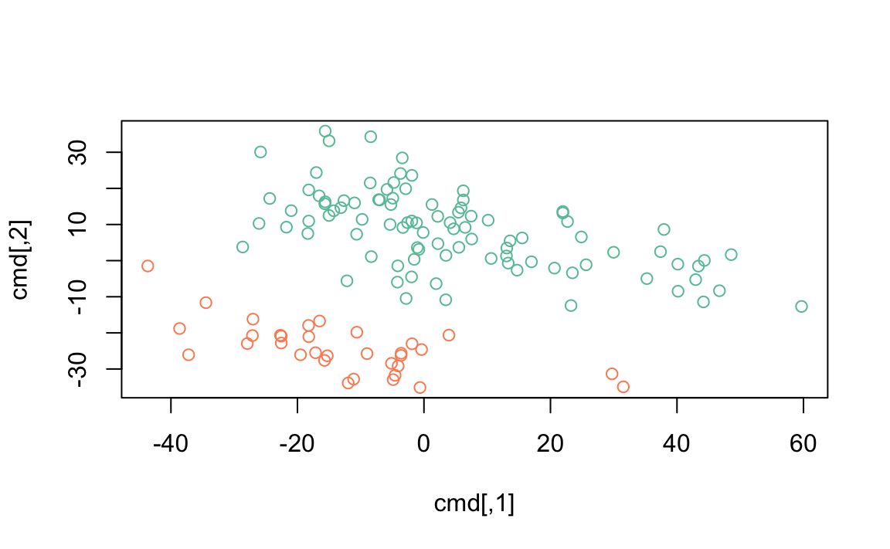

10 Multivariate analysis
This is a classic microarray experiment. Microarrays consist of ‘probesets’ that interogate genes for their level of expression. In the experiment we’re looking at, there are 12625 probesets measured on each of the 128 samples. The raw expression levels estimated by microarray assays require considerable pre-processing, the data we’ll work with has been pre-processed.
10.1 Input and setup
Start by finding the expression data file on disk.
The data is stored in ‘comma-separate value’ format, with each
probeset occupying a line, and the expression value for each sample in
that probeset separated by a comma. Input the data using
read.csv(). There are three challenges:
- The row names are present in the first column of the data. Tell R
this by adding the argument
row.names=1toread.csv(). - By default, R checks that column names do not look like numbers,
but our column names do look like numbers. Use the argument
check.colnames=FALSEto over-ride R’s default. read.csv()returns adata.frame. We could use adata.frameto work with our data, but really it is amatrix()– the columns are of the same type and measure the same thing. Useas.matrix()to coerce thedata.framewe input to amatrix.
exprs <- read.csv(path, row.names=1, check.names=FALSE)
exprs <- as.matrix(exprs)
class(exprs)
## [1] "matrix"
dim(exprs)
## [1] 12625 128
exprs[1:6, 1:10]
## 01005 01010 03002 04006 04007 04008 04010 04016 06002 08001
## 1000_at 7.60 7.48 7.57 7.38 7.91 7.07 7.47 7.54 7.18 7.74
## 1001_at 5.05 4.93 4.80 4.92 4.84 5.15 5.12 5.02 5.29 4.63
## 1002_f_at 3.90 4.21 3.89 4.21 3.42 3.95 4.15 3.58 3.90 3.63
## 1003_s_at 5.90 6.17 5.86 6.12 5.69 6.21 6.29 5.67 5.84 5.88
## 1004_at 5.93 5.91 5.89 6.17 5.62 5.92 6.05 5.74 5.99 5.75
## 1005_at 8.57 10.43 9.62 9.94 9.98 10.06 10.66 11.27 8.81 10.17
range(exprs)
## [1] 1.98 14.13We’ll make use of the data describing the samples
pdata <- read.csv(path, row.names=1)
class(pdata)
## [1] "data.frame"
dim(pdata)
## [1] 128 21
head(pdata)
## cod diagnosis sex age BT remission CR date.cr t.4.11. t.9.22.
## 01005 1005 5/21/1997 M 53 B2 CR CR 8/6/1997 FALSE TRUE
## 01010 1010 3/29/2000 M 19 B2 CR CR 6/27/2000 FALSE FALSE
## 03002 3002 6/24/1998 F 52 B4 CR CR 8/17/1998 NA NA
## 04006 4006 7/17/1997 M 38 B1 CR CR 9/8/1997 TRUE FALSE
## 04007 4007 7/22/1997 M 57 B2 CR CR 9/17/1997 FALSE FALSE
## 04008 4008 7/30/1997 M 17 B1 CR CR 9/27/1997 FALSE FALSE
## cyto.normal citog mol.biol fusion.protein mdr kinet ccr
## 01005 FALSE t(9;22) BCR/ABL p210 NEG dyploid FALSE
## 01010 FALSE simple alt. NEG <NA> POS dyploid FALSE
## 03002 NA <NA> BCR/ABL p190 NEG dyploid FALSE
## 04006 FALSE t(4;11) ALL1/AF4 <NA> NEG dyploid FALSE
## 04007 FALSE del(6q) NEG <NA> NEG dyploid FALSE
## 04008 FALSE complex alt. NEG <NA> NEG hyperd. FALSE
## relapse transplant f.u date.last.seen
## 01005 FALSE TRUE BMT / DEATH IN CR <NA>
## 01010 TRUE FALSE REL 8/28/2000
## 03002 TRUE FALSE REL 10/15/1999
## 04006 TRUE FALSE REL 1/23/1998
## 04007 TRUE FALSE REL 11/4/1997
## 04008 TRUE FALSE REL 12/15/1997Some of the results below involve plots, and it’s convenient to choose pretty and functional colors. We use the RColorBrewer package; see colorbrewer.org
library(RColorBrewer) ## not available? install package via RStudio
highlight <- brewer.pal(3, "Set2")[1:2]`highlight’ is a vector of length 2, light and dark green.
For more options see ?RColorBrewer and to view the predefined
palettes display.brewer.all()
10.2 Cleaning
We’ll add a column to pdata, derived from the BT column, to
indicate whether the sample is B-cell or T-cell ALL.
Microarray expression data is usually represented as a matrix of genes as rows and samples as columns. Statisticians usually think of their data as samples as rows, features as columns. So we’ll transpose the expression values
Confirm that the pdata rows correspond to the exprs rows.
10.3 Unsupervised machine learning – multi-dimensional scaling
Reduce high-dimensional data to lower dimension for visualization.
Calculate distance between samples (requires that the expression matrix be transposed).
Use the cmdscale() function to summarize the distance matrix into
two points in two dimensions.
Visualize the result, coloring points by B- or T-cell status
